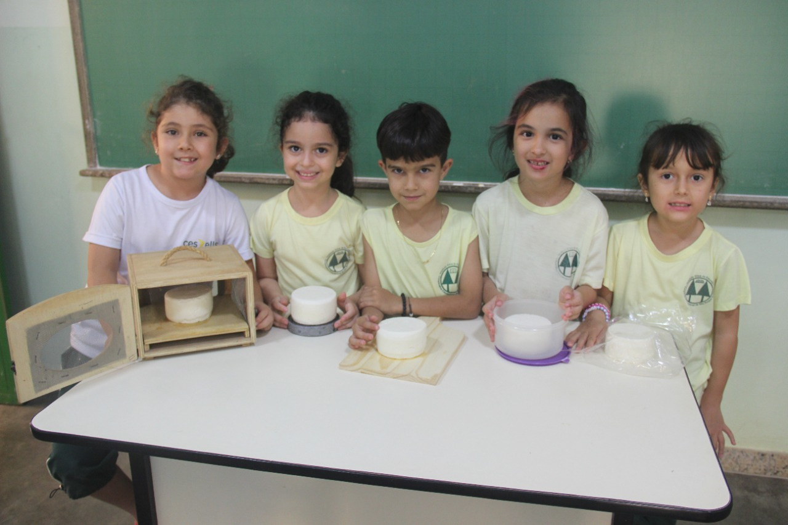
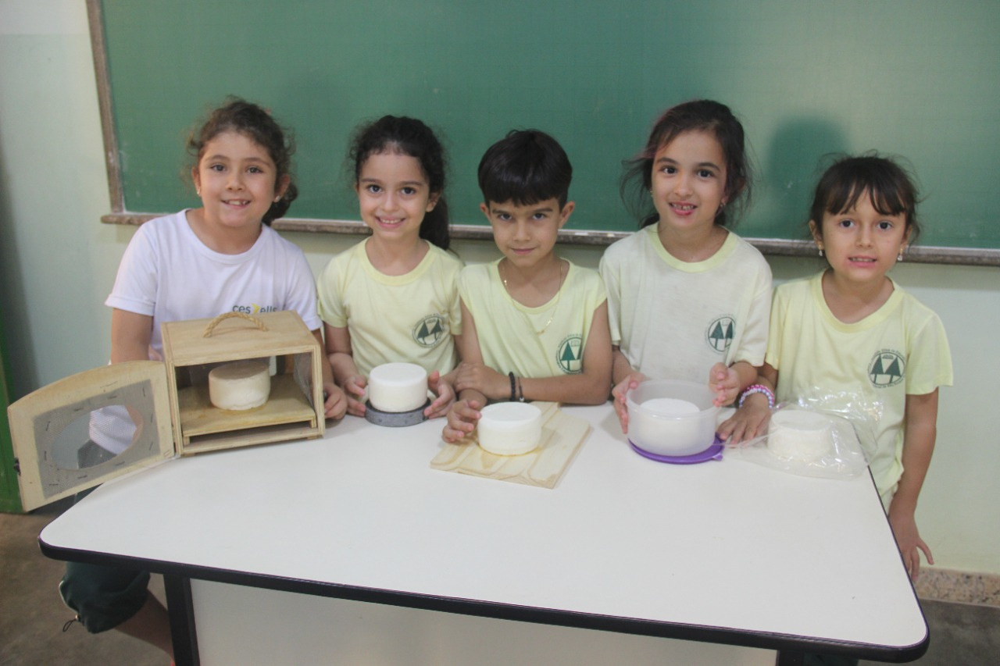

1º ANO ENSINO FUNDAMENTAL ANOS INICIAS.
Dentre os diversos derivados lácteos, os queijos são produtos altamente manipulados e estão sujeitos a contaminação cruzada de diferentes fontes.
Estas condições podem ser agravadas, quando processados com leite cru e, principalmente, sem o emprego das Boas Práticas de Fabricação. Neste contexto, os produtores de queijos artesanais devem elaborar seus produtos utilizando técnicas de processamento que assegurem sua qualidade, ou seja, seguindo os critérios estabelecidos pelas legislações vigentes. Os alunos do 1° ano, na unidade I – Vamos falar de Ciência? do livro didático Bernoulli, aprenderam sobre o trabalho desenvolvido por cientistas de diversas áreas. Partindo desse aprendizado fizeram análises microbiológicas para verificarem a existência ou não de bactérias e se o ambiente de armazenagem do queijo influenciava na proliferação e conservação das mesmas.
Os alunos também visitaram a Roça da Cidade para aprenderem o que é Maturação ou Cura. Que consiste em uma série de processos (transformações) físicos, bioquímicos e microbiológicos que ocorrem em todos os queijos, exceto aqueles que são frescos..
Estes processos modificam a composição química do queijo, principalmente nos teores de lactose, proteínas e lipídeos..
O tempo de maturação varia para cada tipo de queijo.
É durante a maturação ou cura que se desenvolvem as características sensoriais do queijo, como sabor, aroma, textura e formato do queijo.
Nesses processos de transformação, os milhões de MICRORGANISMOS vivos e as enzimas presentes desempenham um papel importantíssimo na maturação, sobretudo nos queijos artesanais feitos de leite cru.
O objetivo pedagógico no conteúdo de geografia é o entendimento das condições atmosféricas, a previsão do tempo e o conhecimento climático.


Estas condições podem ser agravadas, quando processados com leite cru e, principalmente, sem o emprego das Boas Práticas de Fabricação. Neste contexto, os produtores de queijos artesanais devem elaborar seus produtos utilizando técnicas de processamento que assegurem sua qualidade, ou seja, seguindo os critérios estabelecidos pelas legislações vigentes. Os alunos do 1° ano, na unidade I – Vamos falar de Ciência? do livro didático Bernoulli, aprenderam sobre o trabalho desenvolvido por cientistas de diversas áreas. Partindo desse aprendizado fizeram análises microbiológicas para verificarem a existência ou não de bactérias e se o ambiente de armazenagem do queijo influenciava na proliferação e conservação das mesmas.
Os alunos também visitaram a Roça da Cidade para aprenderem o que é Maturação ou Cura. Que consiste em uma série de processos (transformações) físicos, bioquímicos e microbiológicos que ocorrem em todos os queijos, exceto aqueles que são frescos..
Estes processos modificam a composição química do queijo, principalmente nos teores de lactose, proteínas e lipídeos..
O tempo de maturação varia para cada tipo de queijo.
É durante a maturação ou cura que se desenvolvem as características sensoriais do queijo, como sabor, aroma, textura e formato do queijo.
Nesses processos de transformação, os milhões de MICRORGANISMOS vivos e as enzimas presentes desempenham um papel importantíssimo na maturação, sobretudo nos queijos artesanais feitos de leite cru.
O objetivo pedagógico no conteúdo de geografia é o entendimento das condições atmosféricas, a previsão do tempo e o conhecimento climático.
